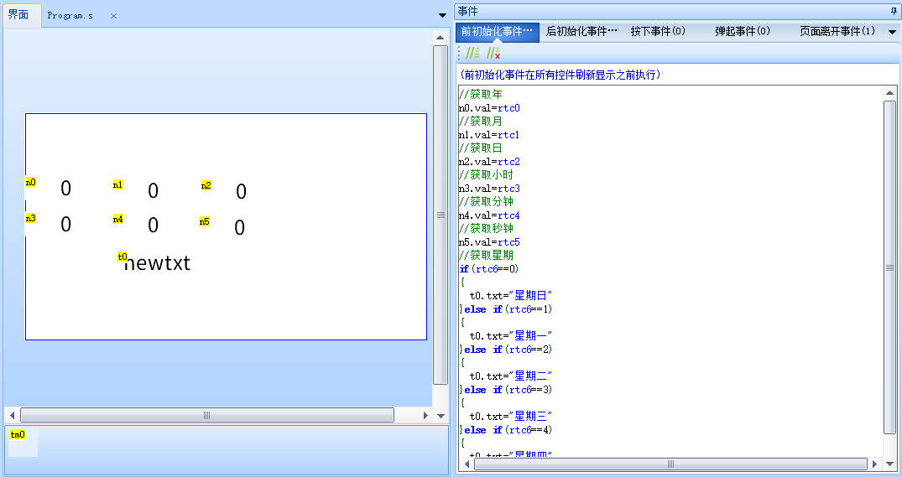
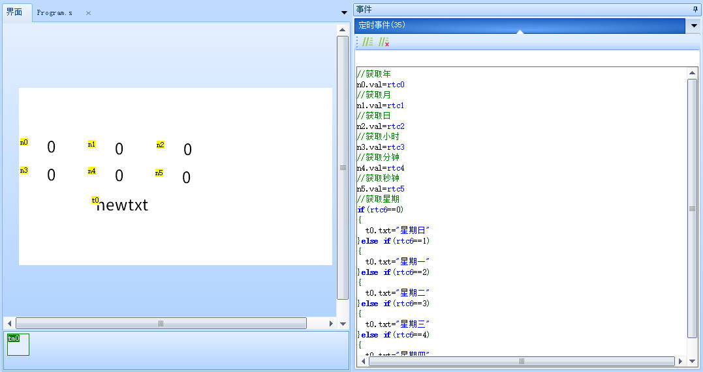
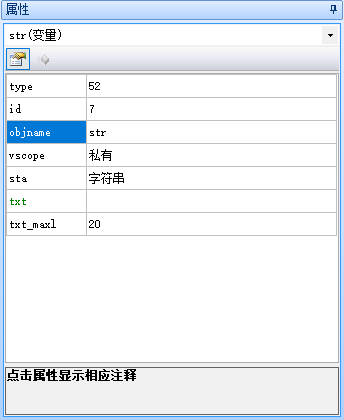
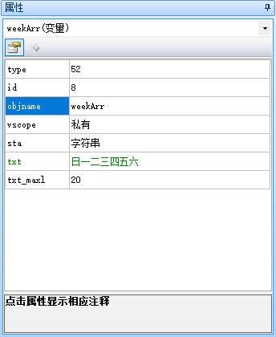
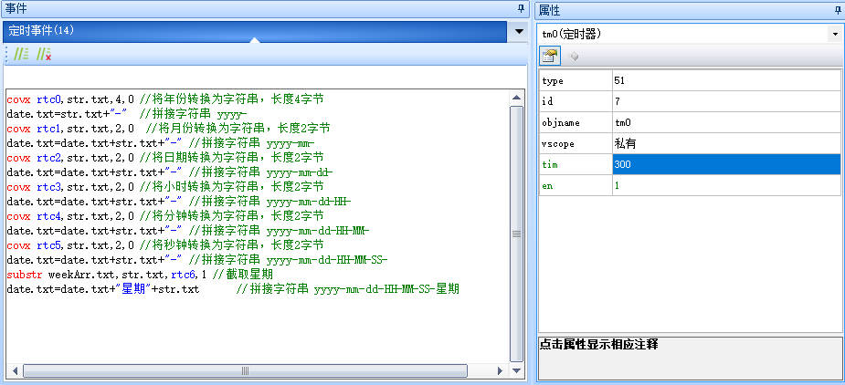
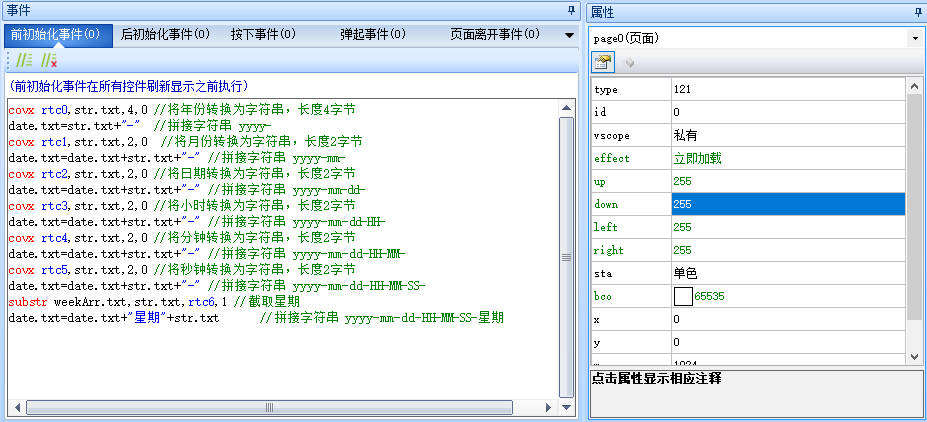

rtc0~rtc6-RTC时钟变量
需要支持RTC的型号才能使用。
支持RTC的屏幕,屏幕背面会有电池座用于放RTC电池,确保断电的情况下时钟也能正常工作，默认不带RTC电池，需要自己装入RTC电池才能在断电时正常走时（型号：CR1220） 如何判断屏幕是否支持RTC实时时钟 。
需配合文本控件/数字控件/指针控件将RTC时间显示到屏幕上
rtc0-rtc6分别代表 年、月、日、时、分、秒、星期
rtc6中，1-6分别表示星期一到星期六，0表示星期天
rtc-示例1
获取rtc时间
//获取年
n0.val=rtc0
//获取月
n1.val=rtc1
//获取日
n2.val=rtc2
//获取小时
n3.val=rtc3
//获取分钟
n4.val=rtc4
//获取秒钟
n5.val=rtc5
//获取星期
if(rtc6==0)
{
t0.txt="星期日"
}else if(rtc6==1)
{
t0.txt="星期一"
}else if(rtc6==2)
{
t0.txt="星期二"
}else if(rtc6==3)
{
t0.txt="星期三"
}else if(rtc6==4)
{
t0.txt="星期四"
}else if(rtc6==5)
{
t0.txt="星期五"
}else if(rtc6==6)
{
t0.txt="星期六"
}
在页面的前初始化事件中写入以下代码

在页面的定时器事件中写入以下代码

注意
获取RTC时，请将上述代码写在页面前初始化事件和定时器中，定时器时间建议为300ms（300比较均匀，太快浪费性能，太慢觉得卡顿）
注意
如果跳转页面时，显示RTC时间的控件会闪一下才变成正确的时间，是因为没有把刷新时间的代码写在页面前初始化事件中，当跳转页面时，需要等到定时器事件到了，才会刷新时间
rtc-示例2
设置rtc时间示例：
//设置年
rtc0=n0.val
//设置月
rtc1=n1.val
//设置月
rtc2=n2.val
//设置时
rtc3=n3.val
//设置分
rtc4=n4.val
//设置秒
rtc5=n5.val
注意
仅x5/k0系列支持RTC。
rtc0-rtc6分别表示年，月，日，时，分，秒，星期。rtc6(星期)为只读，根据当前的年月日自动计算生成。
rtc晶振的精度为20ppm
rtc-示例3
使用文本控件获取rtc时间
1、新建一个文本控件date，date控件的txt_maxl设置为100。
2、新建两个变量控件，均设置为字符串格式，txt_maxl设置为20，两个控件分别改名为str和weekArr，str的txt设置为空，weekArr的txt设置为“日一二三四五六”。


3、新建一个定时器，定时器tim设置为300，在定时器内编写以下代码。

covx rtc0,str.txt,4,0 //将年份转换为字符串，长度4字节
date.txt=str.txt+"-" //拼接字符串 yyyy-
covx rtc1,str.txt,2,0 //将月份转换为字符串，长度2字节
date.txt=date.txt+str.txt+"-" //拼接字符串 yyyy-mm-
covx rtc2,str.txt,2,0 //将日期转换为字符串，长度2字节
date.txt=date.txt+str.txt+"-" //拼接字符串 yyyy-mm-dd-
covx rtc3,str.txt,2,0 //将小时转换为字符串，长度2字节
date.txt=date.txt+str.txt+"-" //拼接字符串 yyyy-mm-dd-HH-
covx rtc4,str.txt,2,0 //将分钟转换为字符串，长度2字节
date.txt=date.txt+str.txt+"-" //拼接字符串 yyyy-mm-dd-HH-MM-
covx rtc5,str.txt,2,0 //将秒钟转换为字符串，长度2字节
date.txt=date.txt+str.txt+"-" //拼接字符串 yyyy-mm-dd-HH-MM-SS-
substr weekArr.txt,str.txt,rtc6,1 //截取星期
date.txt=date.txt+"星期"+str.txt //拼接字符串 yyyy-mm-dd-HH-MM-SS-星期
4、把代码复制到“前初始化事件”中，这样一跳转页面才会及时刷新

rtc-c语言示例
单片机通过串口更新串口屏的RTC时间
printf("rtc0=%d\xff\xff\xff",year);
printf("rtc1=%d\xff\xff\xff",month);
printf("rtc2=%d\xff\xff\xff",day);
printf("rtc3=%d\xff\xff\xff",hour);
printf("rtc4=%d\xff\xff\xff",minute);
printf("rtc5=%d\xff\xff\xff",second);
针对没有RTC的屏幕，也可以直接给对应的数字变量赋值即可
printf("date.year.val=%d\xff\xff\xff",year); //给date页面的year控件的val属性赋值
printf("date.month.val=%d\xff\xff\xff",month); //给date页面的month控件的val属性赋值
printf("date.day.val=%d\xff\xff\xff",day); //给date页面的day控件的val属性赋值
printf("date.hour.val=%d\xff\xff\xff",hour); //给date页面的hour控件的val属性赋值
printf("date.minute.val=%d\xff\xff\xff",minute); //给date页面的minute控件的val属性赋值
printf("date.second.val=%d\xff\xff\xff",second); //给date页面的second控件的val属性赋值
也可以直接给文本控件赋值
printf("date.time.txt=\"%d-%d-%d %d:%d:%d\"\xff\xff\xff",year,month,day,hour,minute,second); //给date页面的time控件的txt属性赋值
rtc-相关链接
rtc-样例工程下载
演示工程下载链接：